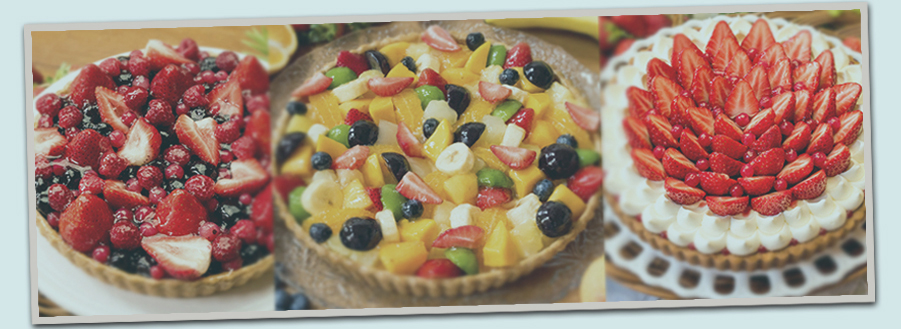

News
6月25日、季節限定のスペシャルメニュー情報公開いたしました。詳しくはスペシャルメニューをご覧ください
6月4日、Qu'il fait bonがオープンしました。ここ九寺楽の町で、皆さんが気軽に立ち寄れる、ゆったりと時間を過ごせる落ち着いた場所にしたいと思っています。

6月25日、季節限定のスペシャルメニュー情報公開いたしました。詳しくはスペシャルメニューをご覧ください
6月4日、Qu'il fait bonがオープンしました。ここ九寺楽の町で、皆さんが気軽に立ち寄れる、ゆったりと時間を過ごせる落ち着いた場所にしたいと思っています。